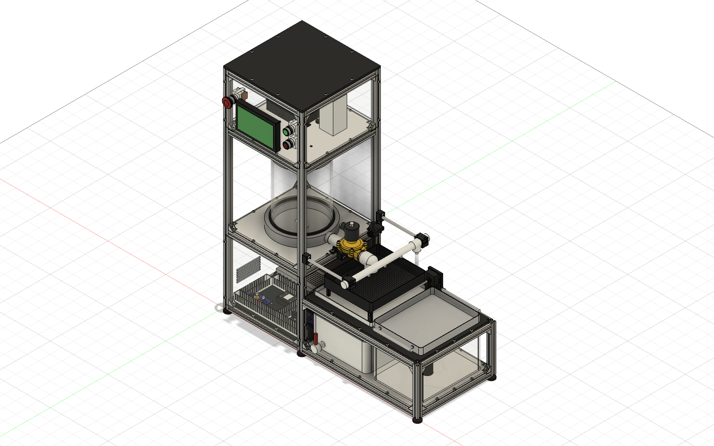
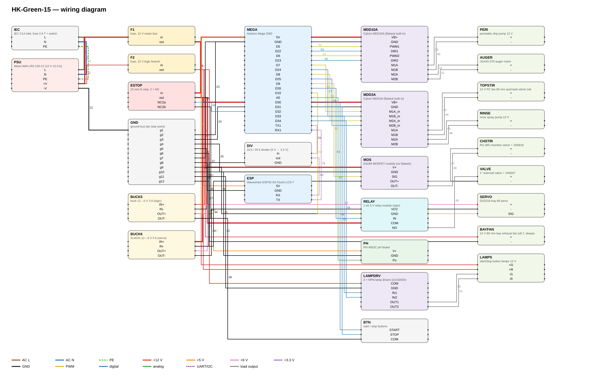

ขั้นตอนตอนนี้
—
—
เหลือในขั้นนี้—เวลาที่เหลือทั้งรอบ (ประมาณ)—
pH น้ำล้าง
—pH
เป้าหมายหยุดล้าง—รอบล้าง—แรงดันหัววัด—
สารละลายและเม็ดเจล
ผงที่ป้อนแล้ว—ละลายแล้ว—
สารละลายในถังกรด—หยดไปแล้ว—
อัตราไหลปั๊มหยด—ต่อเข็ม (เกณฑ์ ≤ 1.5 mL/min)—
จำนวนเม็ด (ประมาณ)—ขนาดเม็ด (แบบจำลอง)—
ค่าปริมาณมาจากตัวจำลอง — เครื่องจริงไม่มีเซนเซอร์ระดับ
อุปกรณ์
ผังการทำงาน
pH ระหว่างล้าง
บันทึก
สั่งงาน
เริ่มได้เมื่อสถานะ IDLE หรือ DONE · ปุ่มเขียวหน้าเครื่องทำงานเหมือนกัน · E-stop ตัดไฟ 12 V มอเตอร์ด้วยฮาร์ดแวร์
ความเร็วตัวจำลอง
—
×600 = 1 วินาทีจริงเท่ากับ 10 นาที (ทั้งรอบ ~9 ชม. ใช้ ~1 นาที)
สูตร
—
ทดสอบทีละตัว
ใช้ตรวจสายไฟ ทิศหมุน และค่า PWM ต่ำสุดที่มอเตอร์ยังหมุน ก่อนใส่สารเคมีจริง · พัดลมกวนถังกรดถูกบังคับ ≥ 128 (50 %)
ก่อนเดินเครื่องครั้งแรก
- E-stop: กดแล้วมอเตอร์ทุกตัวหยุด, หน้าเว็บขึ้น E-STOP
- ปั๊มหยด: หมุนทางที่ดูดจากถังกรดไปหัวเข็ม (กลับขั้วถ้าผิด)
- สกรูป้อนผง: ผงไหลลงช่องตรงถังกรด ไม่ค้างในท่อ
- พัดลมกวนถังกรด + มอเตอร์กวนห้องก่อเจล: แท่งกวนหมุนตาม ไม่กระโดด
- วาล์ว 1": เปิด/ปิดได้ ไม่รั่ว (ทดสอบด้วยน้ำเปล่า)
- ปั๊มสเปรย์: น้ำออกครบ 3 หัว ไม่กระเด็นออกนอกถาด
- เซอร์โวเทถาด: 10° = ราบ, 120° = เทหมด ไม่ชนโครง
- พัดลมกล่องไฟ: หมุนทันทีที่เปิดเครื่อง
บันทึกผลรอบนี้
การพองตัว (%) = (น้ำหนักหลังแช่ − น้ำหนักแห้ง) ÷ น้ำหนักแห้ง × 100 · งานวิจัยเดิม: ไบโอชาร์ 2 % ได้ 605 %
สรุปตามสัดส่วนไบโอชาร์
ผลทั้งหมด ดาวน์โหลด CSV
หัววัด pH
- จุ่มหัววัดในบัฟเฟอร์ pH 7 รอค่านิ่ง 1 นาที → กด "จำค่า pH 7"
- ล้างหัววัด จุ่มบัฟเฟอร์ตัวที่ 2 → เลือกค่า กด "จำค่า"
- กด "ส่งค่าสอบเทียบ"
V = —
—
—
—
สกรูป้อนผง
- ใส่ผงในถังพัก วางถ้วยบนตาชั่งใต้ช่องออก
- สั่งเดิน 60 วินาที (30 rpm = 30 รอบ)
- ชั่งน้ำหนัก → ใส่ค่า → ระบบคำนวณ g/rev
—
—
ปั๊มหยด
- ใส่น้ำเปล่าในถังกรด วางกระบอกตวงใต้หัวเข็ม
- เดินปั๊มที่ PWM ปัจจุบัน 60 วินาที แล้วตวง mL
- ระบบคำนวณ PWM ใหม่ (สมมติอัตราไหลแปรผันตาม PWM − 30)
—
—
น้ำเปล่าไหลเร็วกว่าสารละลายไคโตซาน 6 % ที่หนืด — ทวนซ้ำด้วยสารละลายจริงอีกครั้ง
—
pH —
🟤 0 เม็ด
เติมวัตถุดิบ
🥄 ผง—
🧴 กรด 1 M—
🫧 NaOH—
🚰 น้ำล้าง—
🗑️ น้ำทิ้ง—
☀️ ถาดตาก—
เดินเครื่อง
ความเร็ว
ชิ้นส่วน
ภาพเครื่อง

แผนผังสายไฟ
